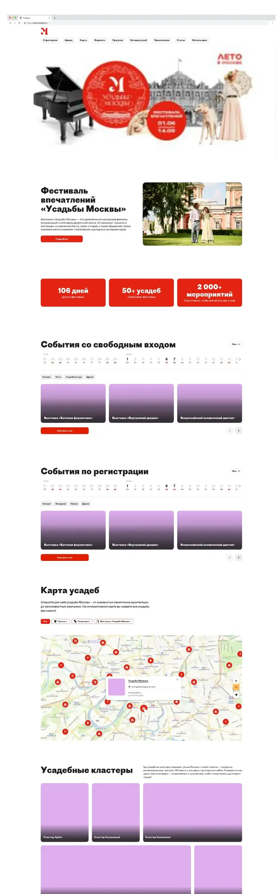
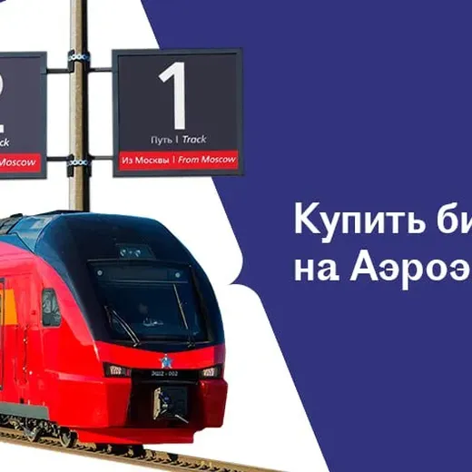

Егор СемёновМенеджер спецпроектов и кросс-промо
С 2022 года придумываю и запускаю спецпроекты цифровых сервисов: стимулирующие акции, кросс-промо с партнёрами, лендинги и не только. Веду проекты от идеи и переговоров до запуска и отчёта.
Спецпроекты и кейсы
 01AR-игра «Городские квесты»: 12 500+ регистраций, 7 500+ прохожденийУвеличил конверсию в 2 раза с помощью анализа данных. Регистраций в день стало 206 вместо 107. Головоломки, сценарий, путь от баннера до подарка
01AR-игра «Городские квесты»: 12 500+ регистраций, 7 500+ прохожденийУвеличил конверсию в 2 раза с помощью анализа данных. Регистраций в день стало 206 вместо 107. Головоломки, сценарий, путь от баннера до подарка 02Новогодняя кампания RUSSPASS: +188% продаж у партнёров со скидкой при общем росте 142%11 партнёров, скидки от 10 до 50%. 5 306 продаж за месяц
02Новогодняя кампания RUSSPASS: +188% продаж у партнёров со скидкой при общем росте 142%11 партнёров, скидки от 10 до 50%. 5 306 продаж за месяц 03Бартер с «Депо»: пакет на 3,4 млн ₽ за 200 тыс. ₽ (выгода х17)Партнёрская сделка: LED-экраны фудкорта в обмен на промо на RUSSPASS3,4 млн ₽ рекламы по прайсу партнёра
03Бартер с «Депо»: пакет на 3,4 млн ₽ за 200 тыс. ₽ (выгода х17)Партнёрская сделка: LED-экраны фудкорта в обмен на промо на RUSSPASS3,4 млн ₽ рекламы по прайсу партнёра 04Зообот RUSSPASS для Московского зоопарка: 55 публикаций в СМИ за неделюTelegram-бот-навигатор: провёл переговоры с заказчиком, написал на Python, придумал концепцию, дизайн и тексты
04Зообот RUSSPASS для Московского зоопарка: 55 публикаций в СМИ за неделюTelegram-бот-навигатор: провёл переговоры с заказчиком, написал на Python, придумал концепцию, дизайн и тексты 05«Ночь в музее» в Гараже особого назначения: 596 билетов со скидкой 85% против 10 годом раньшеОбеспечил эксклюзивную продажу билетов на RUSSPASS в обмен на рекламу музея
05«Ночь в музее» в Гараже особого назначения: 596 билетов со скидкой 85% против 10 годом раньшеОбеспечил эксклюзивную продажу билетов на RUSSPASS в обмен на рекламу музея 06Зимний маршрут «Москва усадебная» с Яндекс Go: механика участия, дизайн, логистика обеспечения призовOnline to Offline спецпроект с Яндекс Go14 усадеб в маршруте
06Зимний маршрут «Москва усадебная» с Яндекс Go: механика участия, дизайн, логистика обеспечения призовOnline to Offline спецпроект с Яндекс Go14 усадеб в маршруте
07Сайт фестиваля «Усадьбы Москвы»: глубина просмотра +10,4% к прошлому годуНовая структура 8 ключевых страниц, 2,60 → 2,87 страницы за визит, карты на 1 000+ точек, UX-редактура и администрирование 08Маршруты для отелей: BTL в премиальных отелях Москвы за 0 рублейПешеходный маршрут от дверей отеля в обмен на офлайн-размещение QR-кодов приложения4 месяца QR-коды RUSSPASS в отеле
08Маршруты для отелей: BTL в премиальных отелях Москвы за 0 рублейПешеходный маршрут от дверей отеля в обмен на офлайн-размещение QR-кодов приложения4 месяца QR-коды RUSSPASS в отеле 09«Скидки недели»: скидки от 15 до 20% от партнёров сервисаПартнёры дают скидку на билеты, а RUSSPASS продвигает их и ставит в топ каталога
09«Скидки недели»: скидки от 15 до 20% от партнёров сервисаПартнёры дают скидку на билеты, а RUSSPASS продвигает их и ставит в топ каталога 10Сайт «Московского чаепития»: структура и навигация по моим макетамКонтент-менеджмент более 1000 точек FMCG-проект города
10Сайт «Московского чаепития»: структура и навигация по моим макетамКонтент-менеджмент более 1000 точек FMCG-проект города 11Бонусная программа RUSSPASS: обновил механику по исследованию 100 программ лояльностиБонусы за 5 действий в сервисе, оплата бонусами до 30% билета, флоу страницыдо 30% билета можно оплатить бонусами
11Бонусная программа RUSSPASS: обновил механику по исследованию 100 программ лояльностиБонусы за 5 действий в сервисе, оплата бонусами до 30% билета, флоу страницыдо 30% билета можно оплатить бонусами
12Перформанс-креативы RUSSPASS: идея, фото и ТЗ дизайнеруБаннеры для РСЯ и сайта: музеи, Аэроэкспресс, новогодние скидкиОбо мне
В RUSSPASS я был менеджером спецпроектов, в «Проектном офисе» главным специалистом управления спецпроектов. Придумывал активации, проводил презентации и договаривался с партнёрами: скидки, бартеры, маршруты, конкурсы, креативы. Приводил проекты к запуску вместе с дизайнерами, разработчиками и подрядчиками.
Идеи ищу на brainstorming-сессиях, CJM продумываю методами дизайн-мышления, самостоятельно собираю макеты в Figma и администрирую сайты.
Ещё веду медиа об электронной музыке ethereal grooves. Взращиваю аудиторию оригинальным контентом и коллаборациями.
Навыки
- Спецпроекты и сторителлинг
- Стимулирующие акции
- Кросс-промо, партнёрства и бартер
- Креативное продюсирование
- Промо-механики и геймификация
- Переговоры и презентация идей
- CJM и дизайн-мышление
- Лендинги и ТЗ
- Программы лояльности
- Ideashowering (брейнштормы)
- Аналитика контента и аудитории
- Тексты
- Figma
- Яндекс Метрика
- MS Office
- TGStat
- Jira
- Kaiten
- Trello
- Notion
- Ai (Claude, Weavy.ai)
Как я работаю с командой
В «Проектном офисе» координировал проектную команду из 7 человек: 3 дизайнера, контент-менеджер, разработчик, аналитик и копирайтер. Ставил задачи и сроки, принимал работу. Работал с агентствами, АНО, федеральными организациями и не только.
Очень люблю Kanban доски. Перевёл планирование и учёт задач из Excel в Kaiten, несмотря на то, что часть коллег привыкла к таблицам. Руководство стало видеть статус задач без лишних встреч, а я видел, где работа застревает. А когда к команде приходили с претензиями, история карточек помогала отстаивать репутацию команды.
Редакция ethereal grooves
Веду контент-план и медиаплан. Раз в две недели провожу планёрку со всей редакцией: разбираем, какие публикации зашли, сверяем сроки. Стараюсь заниматься тимбилдингом – в некоммерческом проекте это очень важно :)
Опыт
Защитил магистерскую в НИУ ВШЭ. Спродюсировал нео-оперу «Дафнис и Хлоя» в галерее fābula (500+ человек). В данный момент моя работа выставлена в галерее на Винзаводе в рамках выставки «Что ты сделал для хип-хопа в свои годы». Организовал сцену ethereal grooves на фестивале Signal с 7 артистами. Сейчас занимаюсь менеджментом и продюсированием в музыкальной индустрии.
Кураторская платформа электронной музыки: редакция, PR, контент
Занимался digital presence фестиваля «Усадьбы Москвы» и проекта «Московское чаепитие» и спецпроекты для этих треков. Координировал проектную команду из 7 человек
Был производственным менеджером в студии Эрика Мусина: отвечал за логистику и производство в проектах «Forbidden Fruit», «Balance» и «Folder»
После успешной практики в РАНХиГС начал путь в команде маркетинга федерального туристического сервиса по планированию путешествий: успел поработать с бонусной программой сервиса, спецпроектами и BTL.
Диплом: руководство по подготовке аудиобрендбуков, то есть того, как бренд звучит в рекламе, продукте и офлайне
Диплом: написал программу, которая по веб-камере распознаёт эмоции зала и подсказывает спикеру, что поправить в презентации. Защита на «отлично»
Хочу делать спецпроекты в Ozon
Москва, офис, гибрид или удалённо. Быстрее всего отвечаю в Telegram.